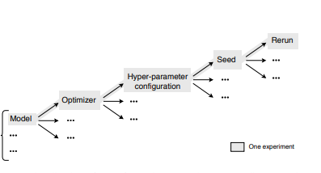
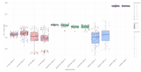
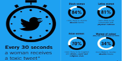

|
Research
I'm interested in computer vision, machine learning, scarce labeled data regime, and AI for Good.
I also care about ML related issues: reproducibility and stability, datasets used for benchmarking. See my slides on ImpactNet!
|
|

|
DECoVaC: Design of Experiments with Controlled Variability Components
Thomas Boquet*,
Laure Delisle*,
Denis Kochetkov,
Nathan Shucher,
Parmida Atighehchian,
Boris Oreshkin,
Julien Cornebise.
2019, [under review].
✔
Experimental design methodology, based on linear mixed models, to study and separate the effects of multiple factors of variation in ML experiments
|
|

|
Reproducibility and Stability Analysis in Metric-Based Few-Shot Learning
Thomas Boquet*,
Laure Delisle*,
Denis Kochetkov*,
Nathan Shucher*,
Boris Oreshkin,
Julien Cornebise.
ICLR 2019, Workshop on Reproducibility in Machine Learning.
✔
Methodology for testing for statistical differences in model performances under several replications (MAML, Prototypical Networks, TADAM).
|
|

|
A large-scale crowdsourced analysis of abuse against women journalists and politicians on Twitter
Laure Delisle*,
Alfredo Kalaitzis*,
Krzysztof Majewski,
Archy de Berker,
Milena Marin,
Julien Cornebise.
NeurIPS 2018, Workshop on AI for Social Good.
✔
First large-scale study on online abuse against women, in partnership with Amnesty International.
|
|
{kind=link}